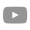
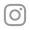

Andrea Echeverri
Bibliografia
Andrea Echeverri Arias (Bogotá; 13 de septiembre de 1965), más conocida como Andrea Echeverri, es una cantante de rock y ceramista colombiana de la Universidad de Los Andes de Colombia. Ha sido ganadora de premios Grammy, MTV, Lo Nuestro, entre otros. Ha sido postulada al Latin Grammy en varias ocasiones, ya sea con Aterciopelados o por sus trabajos como solista; la más reciente en 2013 en la categoría "Best Singer-Songwriter Album" con su disco Ruiseñora.
Es vocalista líder y guitarrista segunda del grupo colombiano Aterciopelados, aunque ha desarrollado en paralelo su carrera musical como solista, siendo reconocida por su habilidad en composición e interpretación de diversos instrumentos como la gaita, percusión, entre otros. Es ganadora de un Premio MTV como solista y de dos Grammy con la banda, entre muchos otros reconocimientos.
Discografía en solitario (sin Aterciopelados)
- 2004 Andrea Echeverry
- 2010 Dos
- 2012 Ruiseñora
Cerámicas
Exposiciones
| Evento o exposición |
Año |
Ciudad |
País |
| La Bienal de Arte de la Habana |
1994 |
Habana |
Cuba |
| La Bienal de arte del MAMBO |
1995 |
Bogotá |
Colombia |
| Exposición individual en el marco de la FIL |
2007 |
Guadalajara |
México |
| Retrospectiva en el Museo de Arte Moderno |
2008 |
Barranquilla |
Colombia |
| Diálogo entre cerámica contemporánea y cerámica precolombina. |
2012 |
Medellín |
Colombia |
| Exposición del Museo Nacional "El barro tiene voz" |
2013 |
Bogotá |
Colombia |
| Museo de La Universidad Jorge Tadeo Lozano: "Ruiseñora Fuego y Canto" |
2014 |
Bogotá |
Colombia |
| Museo de Arte Moderno de Bucaramanga: "Ruiseñora Fuego y Canto" |
2015 |
Bucaramanga |
Colombia |
| Casa de la Música de la Fundación EPM: "Ruiseñora Fuego y Canto" |
2016 |
Medellín |
Colombia |
Redes Sociales

